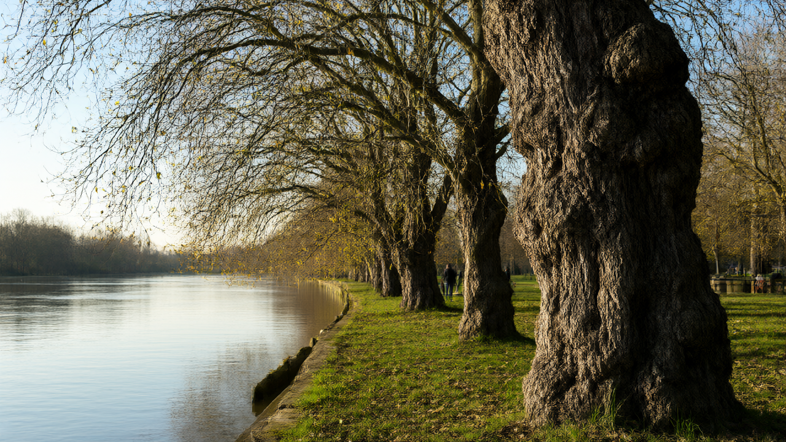

Conservationists in the Thames Valley are using advanced DNA analysis to help restore populations of the rare native black poplar tree.
Conservation groups across the Thames Valley are turning to advanced DNA testing to help restore one of the United Kingdom’s rarest native trees. The black poplar, once a common sight along riverbanks, has seen its numbers plummet due to decades of habitat loss, land drainage, and deliberate felling. Now, a new initiative aims to use genetic analysis to guide breeding techniques that could bring these distinctive trees back from the brink of local extinction.
The project, known as the Swindon to Oxford: Regenerating the Thames and Tributaries nature recovery programme, is working closely with local conservation organizations. Their goal is to regenerate the black poplar population along the River Thames and its surrounding floodplains. By identifying genetically diverse specimens, the team hopes to create resilient new trees capable of thriving in the changing climate while restoring ecological balance to the region.
Catrina Bass, a representative of the Long Mead Foundation in Swindon, describes the black poplar as an extraordinary survivor. Despite their hardiness, she notes that there are currently only about 50 recorded black poplars remaining in Oxfordshire. These trees, often characterized by their gnarled trunks and majestic appearance reminiscent of fantasy landscapes, play a vital role in supporting local wildlife, including the specialized poplar hornet moth.
Beyond their aesthetic and biological value, black poplars serve a critical functional purpose in flood management. Benjamin Heaven Taylor, chief executive of the Trust for Oxfordshire's Environment, emphasizes that these trees line rivers and floodplains, helping to hold back water and reduce flood risk. However, he points out that the remaining population is extremely fragmented, making natural recovery difficult without human intervention.
The restoration effort involves several key steps, starting with the DNA analysis of existing trees to determine the best candidates for propagation. New cuttings are then grown and planted in suitable sites where they can establish themselves. This scientific approach ensures that the new trees are not only genetically robust but also well-suited to their specific environments, increasing their chances of survival.
Financial support for the project has been secured through initial funding from the West Oxfordshire District Council and the Vale of White Horse Council. However, the organizers are now aiming to raise £20,000 to cover the costs of the ongoing work. This includes expenses related to genetic testing, nursery operations, and planting logistics.
In a show of commitment to environmental recovery, Oxfordshire County Council’s Local Nature Recovery Strategy has pledged to match-fund the public fundraiser up to £10,000. This additional support underscores the importance placed on the project by local government bodies, who recognize the broader benefits of restoring native habitats.
The Trust for Oxfordshire's Environment is also playing a pivotal role by engaging with community groups to fund local environmental projects. Their involvement helps to build public awareness and support for the initiative, ensuring that the restoration of the black poplar becomes a shared community achievement rather than just a scientific endeavor.
As the project moves forward, it serves as a model for how technology and traditional conservation methods can be combined to address biodiversity loss. By leveraging DNA analysis, conservationists are not only saving a single species but also strengthening the entire ecosystem of the Thames Valley, ensuring that future generations can enjoy the beauty and benefits of this iconic tree.
All factual claims in the draft article are directly supported by the provided BBC reference. No contradictions or unsupported claims were found.